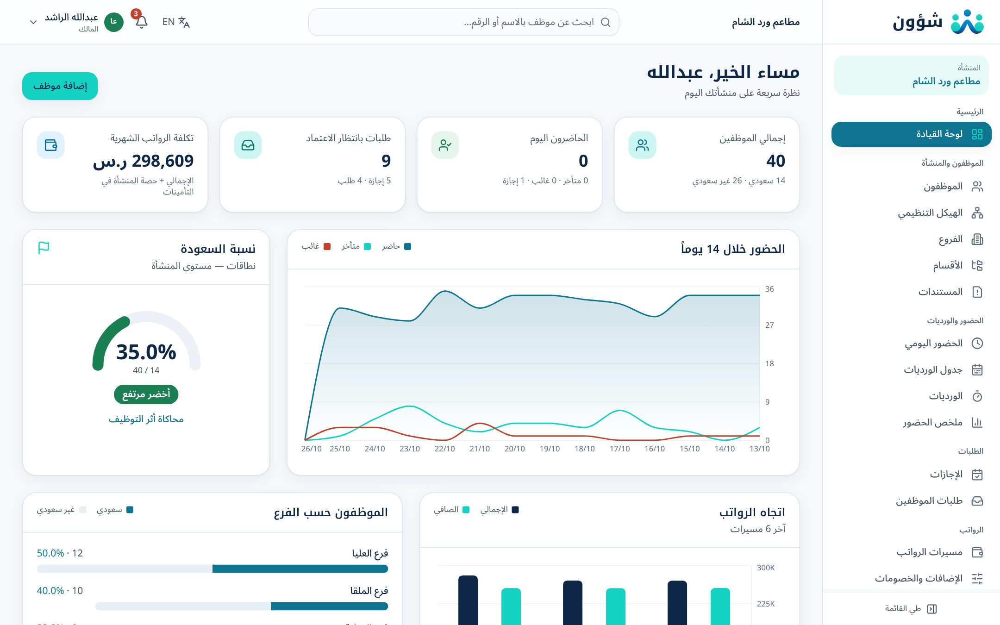
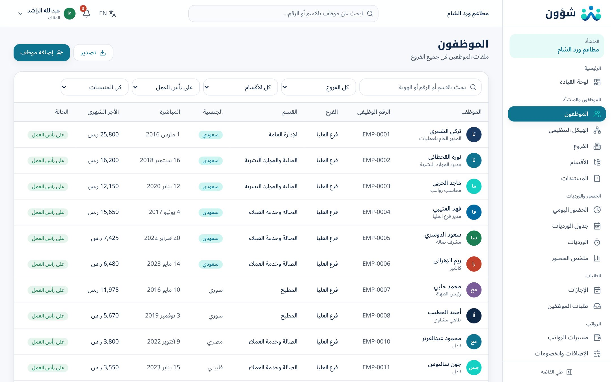
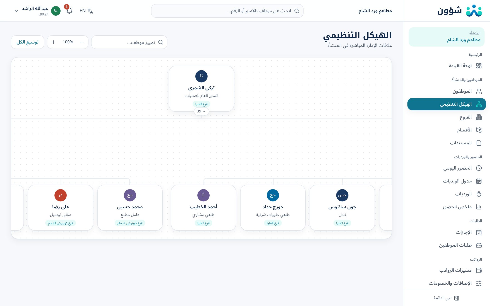
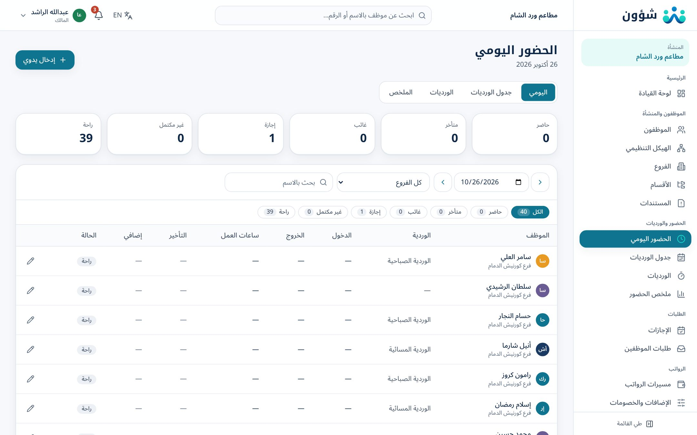
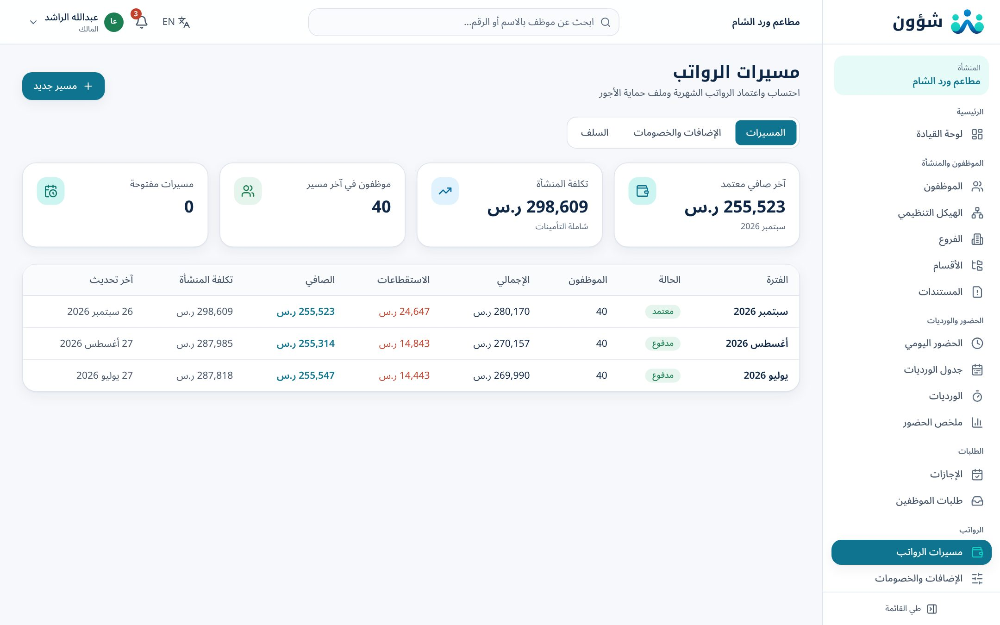
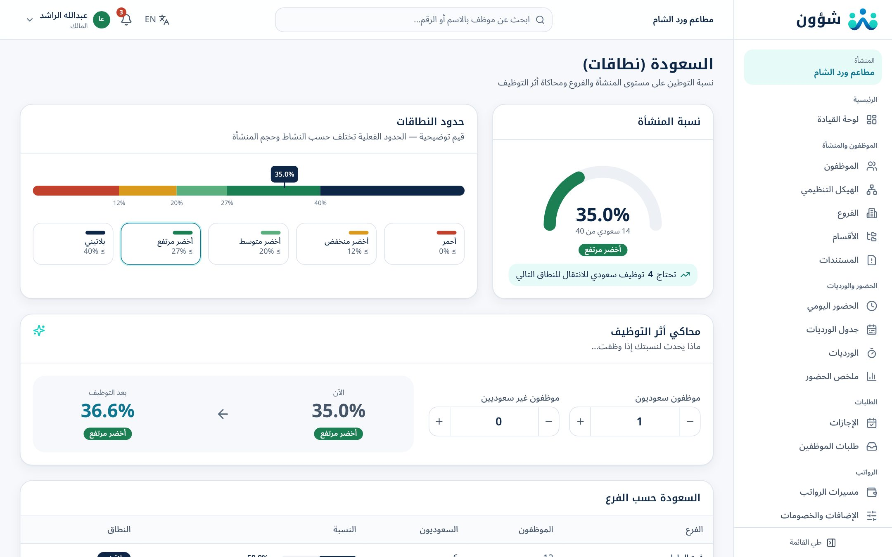
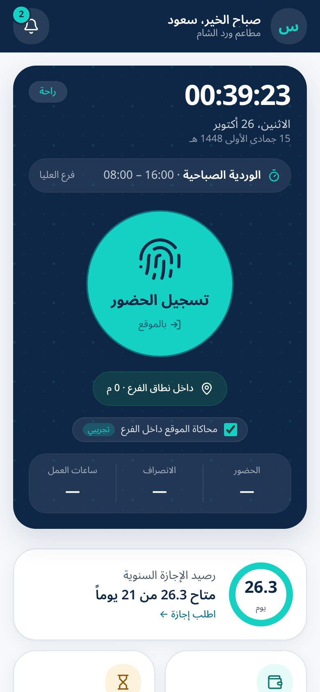
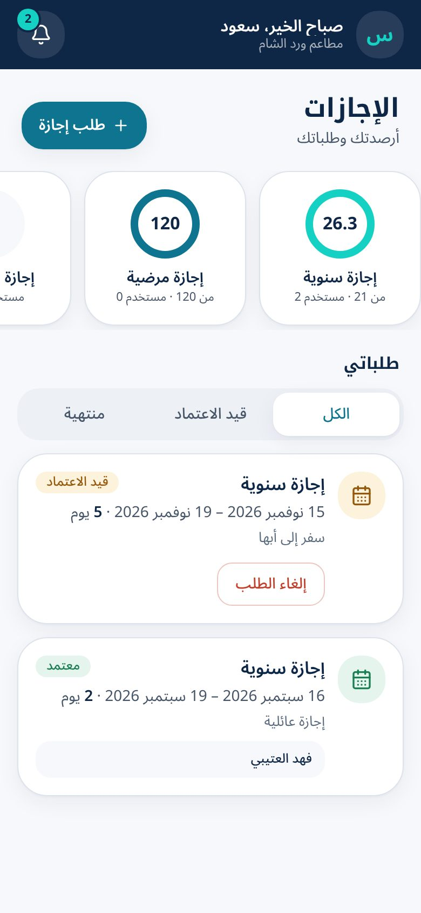
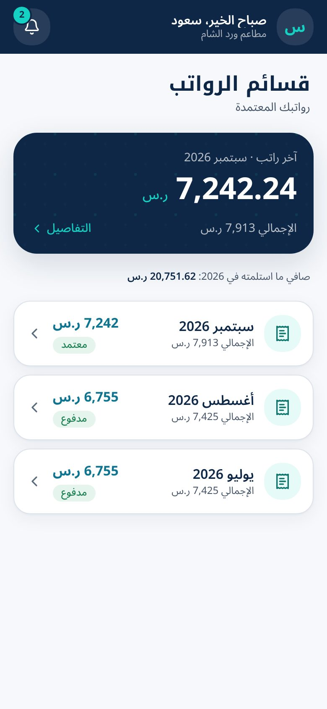
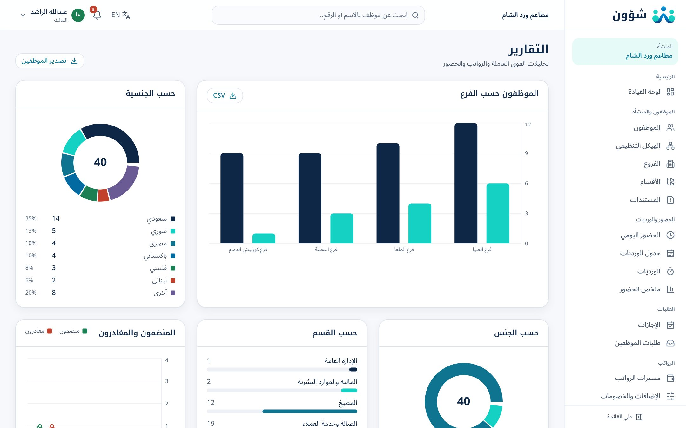

منصة شؤون لإدارة الموارد البشرية
All your people matters, in one place.
منصة سعودية سحابية متكاملة للموارد البشرية والرواتب والحضور، مصممة للمنشآت متعددة الفروع ذات الفرق الميدانية: لوحة تحكم للإدارة، وتطبيق خدمة ذاتية للموظف، ومحرك احتساب وفق نظام العمل السعودي.
نسخة تجريبية كاملة تعمل من المتصفح ببيانات وهمية لشركة «مطاعم ورد الشام» (4 فروع، 40 موظفاً). سجّل الدخول بأي حساب من الصفحة الأخيرة.
شؤون منصة سعودية سحابية للموارد البشرية والرواتب، وُلدت من احتياج حقيقي لدى المنشآت التي تدير فروعاً متعددة: مطاعم ومحلات تجزئة ومواقع مقاولات وعيادات وأساطيل توصيل. في هذه المنشآت يعمل الفريق في الميدان لا في المكتب، وتتوزع المسؤولية بين مدراء الفروع، وتتعقد الرواتب مع الورديات والإضافي والغياب. شؤون تجمع كل ذلك في مكان واحد.
Shuoon is a Saudi cloud HR & payroll platform for multi-branch businesses — restaurants, retail, contracting, clinics and logistics — where teams work in the field, responsibility is spread across branch managers, and payroll is complicated by shifts, overtime and absence.
أن يدير صاحب أي منشأة سعودية كل فروعه وفريقه من شاشة واحدة، بثقة ووضوح.
أتمتة الموارد البشرية والرواتب وفق أحكام نظام العمل السعودي، بتجربة عربية بسيطة تناسب الفرق الميدانية.
معظم الأنظمة تبدأ من الموظف وتنتهي عنده. شؤون تبدأ من الفرع: لكل فرع نطاقه الجغرافي للبصمة، ووردياته، ومديره الذي يرى فريقه فقط، ونسبة سعودته الخاصة، وتكلفة رواتبه.
وحدة متكاملة
أدوار وصلاحيات
لغتان: عربي وإنجليزي
يوماً تجربة مجانية
| التحدي اليوميThe daily challenge | كيف تحله شؤونHow Shuoon solves it |
|---|---|
| حضور لا يمكن التحقق منه، وبصمة بالنيابة عن الزملاءUnverifiable attendance and buddy punching | بصمة من جوال الموظف داخل نطاق جغرافي محدد لكل فرعMobile check-in inside each branch’s geofence |
| ورديات ليلية تمتد بعد منتصف الليل وتربك الحساباتOvernight shifts that break the math | احتساب صحيح للساعات والتأخير والإضافي مهما كان توقيت الورديةCorrect hours, lateness and overtime across midnight |
| رواتب تُحسب يدوياً في جداول، وأخطاء في الإضافي والغيابManual spreadsheet payroll and errors | مسير آلي يقرأ الحضور والإجازات والسلف ويطبق نظام العملAutomated run reading attendance, leave and loans |
| ملف حماية الأجور يُجهَّز يدوياً لكل بنكWPS files prepared by hand | ملف جاهز مع فحص الآيبان ورقم الهوية قبل التنزيلGenerated file with IBAN and ID validation |
| لا أحد يعرف نسبة السعودة في كل فرعNo branch-level Saudization picture | نسبة ونطاق لكل فرع، ومحاكٍ لأثر التوظيفRate and band per branch, plus a hiring simulator |
| إقامات وجوازات وتراخيص تنتهي دون تنبيهIqamas, passports and licences expiring unnoticed | مركز مستندات بتنبيهات قبل 90 و30 يوماًDocuments centre with 90 and 30-day alerts |
| طلبات ورقية تضيع بين الفرع والإدارةPaper requests lost between branch and HQ | طلبات رقمية من الجوال مع سير اعتماد عبر مدير الفرعDigital requests with branch-manager approval |
| دوران مرتفع للعمالة ومخالصات متكررةHigh turnover and frequent settlements | احتساب نسبي آلي للمنضمين والمغادرين، ونهاية خدمة بمعاينة قبل التنفيذAutomatic pro-rating and end-of-service preview |
| مدير الفرع بلا أدوات، والإدارة غارقة في التفاصيلBranch managers without tools; HQ drowning in detail | صلاحيات لمدير الفرع على فريقه فقط، ولوحة قيادة للإدارةScoped branch-manager role and an executive dashboard |

الموظفون والفروع والحضور والإجازات والطلبات والرواتب والسلف والسعودة والأداء والتوظيف والتقارير والإعدادات.
بصمة بالموقع، وإجازات، وقسائم رواتب، وطلبات، وإشعارات، يعمل من متصفح الجوال ويُثبَّت كتطبيق.
الحلول لكل قطاع، والأسعار، وطلب عرض، والتسجيل للتجربة، وحاسبة نهاية الخدمة المجانية.
كل فرع وحدة مستقلة بموقعه ومديره ونسبة سعودته.
ملف رقمي كامل مع تنبيهات انتهاء الإقامات والعقود.
بصمة بالموقع وجدول ورديات أسبوعي لكل فرع.
أنواع الإجازات وفق نظام العمل مع الأرصدة والاعتماد.
خطابات ومطالبات وسلف بأقساط تُخصم آلياً.
مسير آلي وقسائم وملف حماية الأجور.
مكافأة وفق المادتين 84 و85 مع المخالصة.
نسبة ونطاق لكل فرع ومحاكاة التوظيف.
دورات تقييم وأهداف موزونة ونتائج محسوبة.
وظائف شاغرة ولوحة مرشحين بالمراحل.
لوحة قيادة وتقارير قابلة للتصدير وتعاميم للموظفين.
خدمة ذاتية كاملة من الجوال.
إضافة إلى خدمات التهيئة وترحيل البيانات والتدريب والدعم الفني، وحاسبة نهاية الخدمة المجانية على الموقع. · Plus onboarding, migration, training and support services, and a free end-of-service calculator.


بصمة تثبت الحضور فعلاً: يسجل الموظف حضوره من جواله، وتتحقق شؤون من موقعه داخل نطاق الفرع، ثم تحسب التأخير والإضافي تلقائياً وترسلها مباشرة إلى مسير الرواتب.

| نوع الإجازةLeave type | الاستحقاق في شؤونEntitlement in Shuoon |
|---|---|
| السنويةAnnual | 21 يوماً، و30 يوماً بعد خمس سنوات (م109)، مع استحقاق تدريجي ورصيد مرحّل21 days, 30 after five years (Art. 109), accrued with carry-over |
| المرضيةSick | 30 يوماً بأجر كامل، ثم 60 يوماً بثلاثة أرباع الأجر، ثم 30 بدون أجر (م117)30 full pay, 60 at 75%, 30 unpaid (Art. 117) |
| الوضعMaternity | 12 أسبوعاً (84 يوماً تقويمياً)12 weeks (84 calendar days) |
| الزواج · الوفاة · المولودMarriage · Bereavement · Paternity | 5 · 5 · 3 أيام5 · 5 · 3 days |
| الحج · الامتحان · بدون أجرHajj · Exam · Unpaid | 15 يوماً مرة واحدة · حسب الحاجة · حسب الموافقة15 days once · as needed · on approval |
جميع الاستحقاقات قابلة للتعديل من إعدادات المنشأة. · All entitlements are configurable per company.

ملف رواتب (CSV) قابل للتخصيص لرفعه عبر البنك أو مُدد، مع فحص الآيبان السعودي ورقم الهوية وصافي الراتب.
نصف راتب عن كل سنة من الخمس الأولى وراتب كامل بعدها (م84)، ونسب الاستقالة (م85)، وتعويض رصيد الإجازات، مع المخالصة.

حدود نطاقات المعروضة توضيحية، والحدود الفعلية تختلف حسب النشاط وحجم المنشأة. · Band thresholds are illustrative and vary by activity and size.
كل ما يحتاجه الموظف الميداني… في جواله

البصمة بالموقع

الإجازات والأرصدة

قسائم الرواتب
بصمة بالموقع، ووردية اليوم بالتاريخين الميلادي والهجري، وسجل الحضور، وطلب تصحيح.
الأرصدة، وطلب إجازة بحساب الأيام فوراً، وسلفة، وتعريف بالراتب، وخروج وعودة.
قسائم الرواتب بالتفصيل مع الطباعة والحفظ بصيغة PDF.
يعمل من متصفح الجوال ويُثبَّت على الشاشة الرئيسية، بالعربية والإنجليزية، مع إشعارات للاعتمادات والقسائم.

| الصلاحيةPermission | المالكOwner | الموارد البشريةHR | الرواتبPayroll | مدير الفرعBranch mgr | الموظفEmployee |
|---|---|---|---|---|---|
| إدارة الموظفينManage employees | ✓ | ✓ | قراءة | فرعه | — |
| الرواتب والسلفPayroll & loans | ✓ | ✓ | ✓ | — | قسائمه |
| اعتماد الإجازات والطلباتApprove leave & requests | ✓ | ✓ | — | فرعه | — |
| الحضور والوردياتAttendance & shifts | ✓ | ✓ | قراءة | فرعه | بصمته |
| الإعدادات والمستخدمونSettings & users | ✓ | ✓ | — | — | — |
* تساعدك شؤون على تطبيق الأنظمة، وتبقى المسؤولية النظامية على المنشأة بصفتها صاحب العمل.Shuoon helps you apply the regulations; legal responsibility remains with the employer.
| المادة / الجهةArticle / body | التطبيق في شؤونHow Shuoon applies it |
|---|---|
| المادة 84 و85Art. 84 & 85 | مكافأة نهاية الخدمة ونسب الاستقالةEnd-of-service award and resignation factors |
| المادة 92Art. 92 | سقف الخصومات بنصف الأجر مع ترحيل الفرقDeduction cap with carry-over |
| المادة 107Art. 107 | أجر العمل الإضافيOvertime pay |
| المادتان 109 و117Art. 109 & 117 | الإجازة السنوية والمرضية بالشرائحAnnual and tiered sick leave |
| التأمينات الاجتماعيةGOSI | حصتا الموظف والمنشأة مع حدود الأجر الخاضعEmployee and employer shares with wage limits |
| نطاقاتNitaqat | نسبة ونطاق لكل فرع ومحاكاة التوظيفPer-branch rate, band and simulator |
أداة عامة على موقع شؤون يحسب بها أي موظف أو صاحب منشأة مكافأة نهاية الخدمة وفق المادتين 84 و85، بإدخال تاريخ المباشرة والانتهاء والأجر وسبب الإنهاء.
ورديات متغيرة، وفروع كثيرة، ودوران عالٍ للعمالة.
معارض في مدن متعددة ونسب سعودة يجب ضبطها.
مواقع مشاريع متنقلة وعمالة ميدانية كبيرة.
كوادر طبية بورديات دقيقة وتراخيص يجب متابعتها.
مستودعات ومراكز توزيع وسائقون على الطريق.
لا نسلمك نظاماً ونغادر. فريقنا يرافقك من أول يوم حتى يعمل كل فرع على شؤون بثقة. أغلب المنشآت تبدأ خلال أسبوع: استيراد الموظفين، وإعداد الفروع ونطاقاتها، ثم أول مسير.
بيانات المنشأة، والفروع ونطاقاتها الجغرافية، والأقسام، والورديات، وأنواع الإجازات، والعطل الرسمية، والمستخدمون والصلاحيات.
استيراد الموظفين والرواتب والأرصدة والمستندات من الجداول أو الأنظمة السابقة.
جلسات لإدارة الموارد البشرية والرواتب ومدراء الفروع، وأدلة مختصرة للموظفين لاستخدام التطبيق.
نراجع معك أول مسير مقارنة بطريقتك الحالية قبل الاعتماد النهائي.
بريد ومحادثة في الباقة الأساسية، وأولوية في باقة النمو، ومدير حساب مع اتفاقية مستوى خدمة لباقة المؤسسات.
للمنشآت التي تبدأ بفرع أو فرعين.
للمنشآت متعددة الفروع التي تتوسع.
للمجموعات الكبيرة ومتطلبات التكامل الخاصة.
40 موظفاً × 29 ريالاً = 1,160 ريالاً شهرياً، أو 986 ريالاً شهرياً عند الاشتراك السنوي (خصم 15%)، قبل ضريبة القيمة المضافة.
خصم 15% على الاشتراك السنوي · السعر لكل موظف نشط شهرياً · الحد الأدنى للفوترة 10 موظفين في الأساسية والنمو · الأسعار لا تشمل الضريبة، وتُضاف ضريبة القيمة المضافة (15%) عند انطباقها.
15% off annual billing · per active employee · minimum 10 employees · prices exclude tax; 15% VAT is added where applicable.
| المزايا | Features | أساسيEssential | نموGrowth | مؤسساتEnterprise |
|---|---|---|---|---|
| الأساسيات · Core | ||||
| ملفات الموظفين والمستندات | Employee files & documents | ✓ | ✓ | ✓ |
| عدد الفروع | Branches | حتى 2 | غير محدود | غير محدود |
| تطبيق الخدمة الذاتية | Self-service app | ✓ | ✓ | ✓ |
| الطلبات والخطابات | Requests & letters | ✓ | ✓ | ✓ |
| الحضور والإجازات · Attendance & leave | ||||
| بصمة بالموقع (Geofence) | Geofenced check-in | ✓ | ✓ | ✓ |
| جدول ورديات أسبوعي | Weekly roster | ✓ | ✓ | ✓ |
| مديرو فروع بصلاحيات محصورة | Scoped branch managers | — | ✓ | ✓ |
| الإجازات وفق نظام العمل | Labor-law leave types | ✓ | ✓ | ✓ |
| الرواتب والامتثال · Payroll & compliance | ||||
| مسير الرواتب والقسائم | Payroll & payslips | ✓ | ✓ | ✓ |
| ملف حماية الأجور (WPS) | WPS file | ✓ | ✓ | ✓ |
| نهاية الخدمة والمخالصة | End of service & settlement | ✓ | ✓ | ✓ |
| السعودة لكل فرع ومحاكاة | Per-branch Saudization & simulation | — | ✓ | ✓ |
| النمو والتحليل · Growth & analytics | ||||
| الأداء والتقييم | Performance reviews | — | ✓ | ✓ |
| التوظيف (Kanban) | Recruitment (Kanban) | — | ✓ | ✓ |
| تقارير متقدمة | Advanced reports | — | ✓ | ✓ |
| تكاملات مخصصة | Custom integrations | — | — | ✓ |
| الدعم · Support | ||||
| دعم بالعربية | Arabic support | بريد ومحادثة | أولوية | مدير حساب |
| تهيئة وترحيل بيانات | Onboarding & migration | ذاتية | بمساعدة | كاملة |
| اتفاقية مستوى خدمة | SLA | — | — | ✓ |
ما الذي يميز شؤون عن أنظمة الموارد البشرية العامة؟
شؤون تجعل الفرع هو الوحدة الأساسية: لكل فرع نطاق جغرافي للبصمة، وورديات، ومدير يرى فريقه فقط، ونسبة سعودة خاصة به. هذا ما تحتاجه المنشآت ذات العمالة الميدانية.
هل يحتاج الموظف لتحميل تطبيق من المتجر؟
لا. تطبيق الخدمة الذاتية يعمل من متصفح الجوال ويمكن إضافته للشاشة الرئيسية كأي تطبيق.
هل يدعم شؤون ملف حماية الأجور؟
نعم، بعد اعتماد المسير يمكنك تصدير ملف حماية الأجور بصيغة جاهزة للرفع عبر بنكك أو المنصات المعتمدة.
كم يستغرق التشغيل؟
أغلب المنشآت تبدأ خلال أسبوع: استيراد الموظفين، وإعداد الفروع ونطاقاتها، ثم أول مسير.
أين تُستضاف بياناتنا؟
نستضيف البيانات لدى مزوّد سحابي موثوق مع تشفير الاتصال، ونوضح موقع الاستضافة في العقد، ونوفّر الاستضافة داخل المملكة عند الطلب. ونتعامل معها بممارسات تراعي نظام حماية البيانات الشخصية.
هل يمكنني التجربة قبل الاشتراك؟
بالتأكيد. ابدأ تجربة مجانية لمدة 14 يوماً دون بطاقة ائتمانية، أو اطلب عرضاً تجريبياً مع فريقنا.
كيف يُحتسب السعر؟
السعر لكل موظف نشط شهرياً. الموظفون المنتهية خدماتهم لا يُحتسبون.
هل الأسعار تشمل ضريبة القيمة المضافة؟
الأسعار المعروضة لا تشمل الضريبة، وتُضاف ضريبة القيمة المضافة (15%) عند انطباقها.
هل يوجد حد أدنى لعدد الموظفين؟
الحد الأدنى للفوترة 10 موظفين في الباقتين الأساسية والنمو.
هل يمكنني تغيير الباقة لاحقاً؟
نعم، يمكنك الترقية في أي وقت، وتُطبَّق الترقية من الفاتورة التالية.
ماذا يحدث لبياناتي إذا ألغيت الاشتراك؟
يمكنك تصدير بياناتك كاملة، ونحذفها بعد 30 يوماً من الإلغاء ما لم يُطلب غير ذلك نظاماً.
«أول مرة نقفل المسير لأربعة عشر فرعاً في يوم واحد.»
سارة العتيبي — مديرة الموارد البشرية، سلسلة مطاعم (مثال)
«مديرو الفروع صاروا يعتمدون إجازات فرقهم بأنفسهم، والإدارة تتابع فقط.»
فهد القحطاني — المدير التنفيذي، متاجر تجزئة (مثال)
«البصمة بالموقع أنهت جدل الحضور في مواقع المشاريع.»
م. خالد الزهراني — مدير المشاريع، شركة مقاولات (مثال)
Ready to bring all your people matters into one place?
الموقع: www.shuoon.net
البريد: hello@shuoon.net
الجوال وواتساب: +966 55 042 1235
الرياض، المملكة العربية السعودية
oolong2006-ship-it.github.io/codex
كلمة المرور لكل الحسابات: Shuoon@2026
owner@shuoon.demo — المالك
hr@shuoon.demo — الموارد البشرية
manager@shuoon.demo — مدير فرع
employee@shuoon.demo — تطبيق الموظف